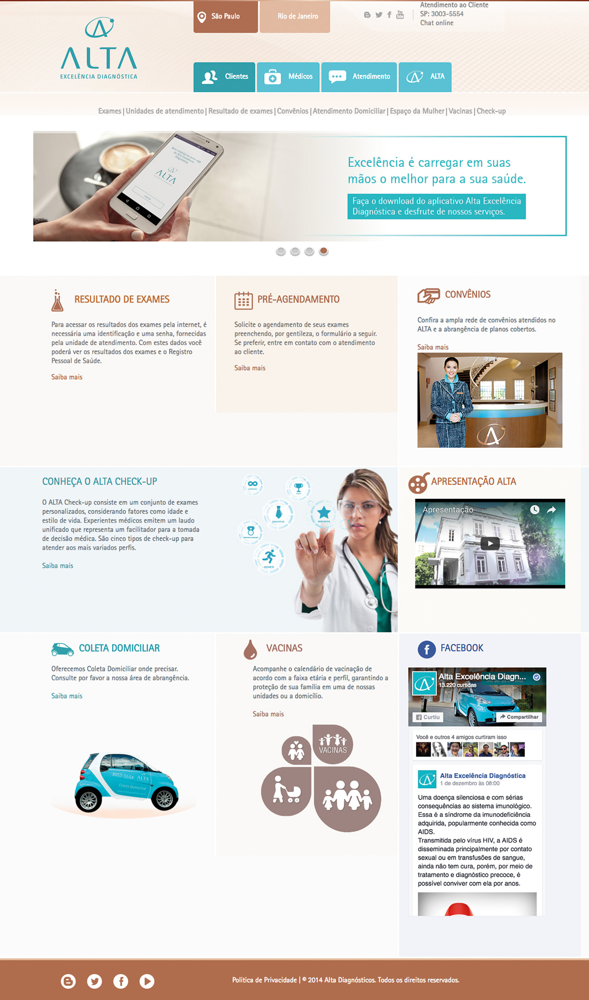
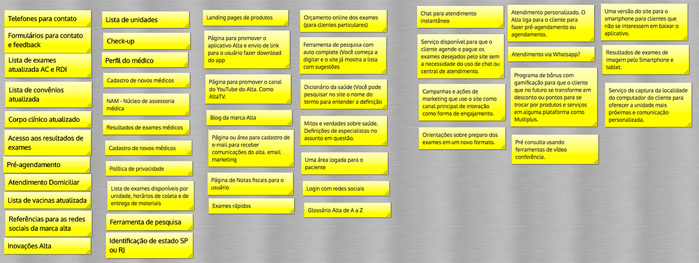
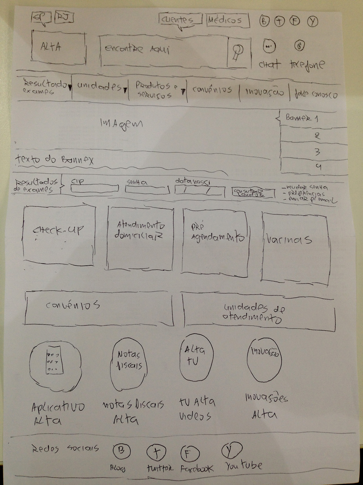
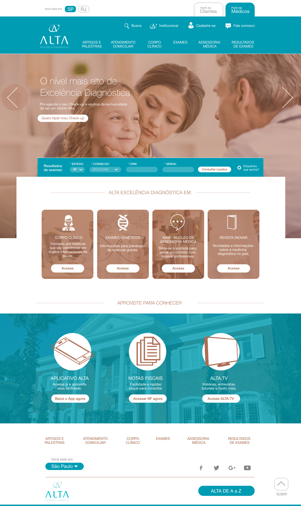
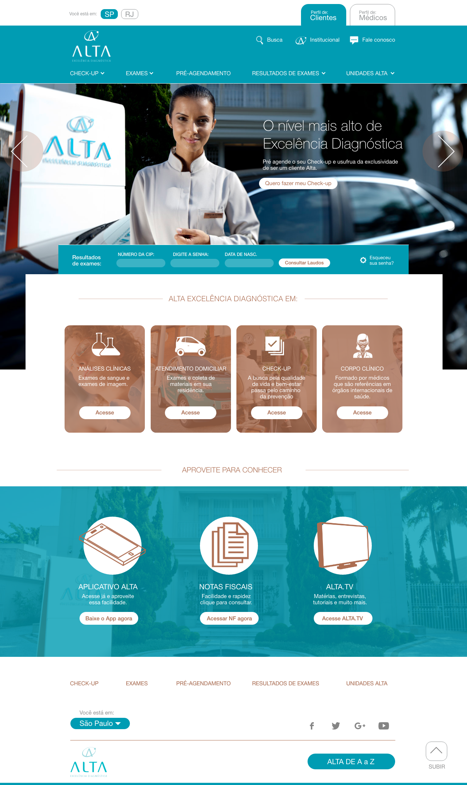
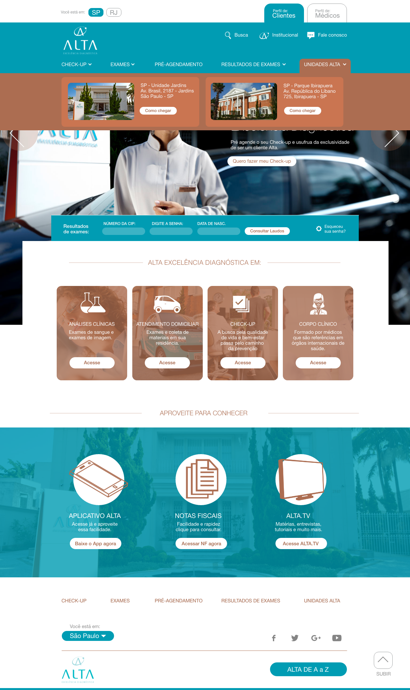
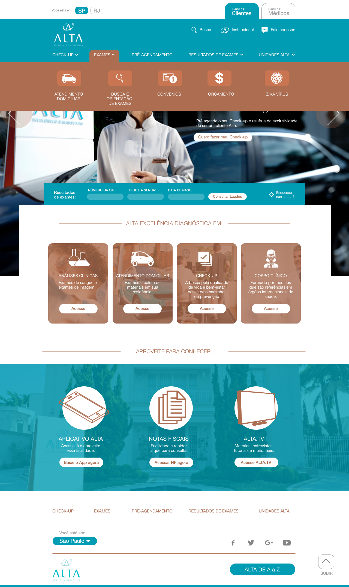

Entendendo o caso
O Alta Diagnósticos é uma marca do grupo Dasa exclusiva para o segmento premium. Criada há mais ou menos 5 anos, houve um grande projeto de criação da marca, concepção das unidades e acima de tudo a preocupação com a exepriência que o cliente Alta deveria ter desde o momento de sua chegada em qualquer unidade.
O problema é que toda a experiência que o cliente vivencia na unidade Alta não é refletido em seus canais digitais, principalmente em seu site. Em pesquisa interna realizada através dos sistemas de atendimento além dos dados do G.A. (Google Analitycs) relevam que grande parte destes clientes tomam decisões de onde fazer seus exames a partir de pesquisas na internet.
Nós encontramos um site projetado de modo incompatível com o que a marca precisa e o que a marca pede. Então fizemos um trabalho de restruturação para entender como poderíamos equalizar a experiência de uma unidade alta com seus canais digitais a partir do site oficial, além disso, a meta também estava concentrada no aumento do percentual de geração de negócios a partir do site.O site atual da marca Alta

Começamos pelas entrevistas
Entrevistei a equipe de marketing responsável pela marca Alta e levantei diversas questões das quais me ajudou a entender melhor o cenário completo. Com base neste documento, iniciei um processo de mapeamento. A entrevista não está completa devido ao foto de possuir informações sigilosas. Mas o resumo deste projeto é que: O seu propósito é transmitir uma experiência tão increivel quanto a de uma unidade Alta em seus canais digitais de forma que a marca seja reconhecida por essa transmissão de experiências incríveis.
Definindo os objetivos deste novo site
Definimos uma série de objetivos para a construção deste novo site, alguns foram:
- Um site com foco em produtificação- Foco em geração de novos negócios a partir do site
- Foco na geração de novas receitas
- Foco em posicionamento orgânico nos motores de busca
- Foco em responsividade
- Um site simples e inteligente para o usuário
UX deve estar em tudo, mas nem todo projeto terá orçamento para UX de ponta a ponta.
O orçamento deste projeto não permitiu colocar em prática os devidos processos de UX. Por isso precisei compactar as fases para me adequar ao orçamento disponível do projeto. Depois da entrevista iniciei o mapeamento para chegar na primera versão do wireframe. Ressalto também que depois do mapeamento de ideias conforme os post-its, houve um processo de priorização baseado em esforços e custos.

Algumas características de um processo ágil.
Quando iniciamos este projeto, existiam pessoas chaves e essas eram:
- Coordenador de TI (Web)
- Analista de Sistema (Desenvolvedor)
- Coordenadora de Marketing
- Analista de Marketing
- UX Designer
Criamos um grupo de e-mail com o objetivo de ter uma comunicação rápda. Durante todo o processo de mapeamento, o que não fizemos em uma sala de reunião, fizemos por vídeoconferências além dos e-mails. Com isso otimizamos o tempo de realização do projeto (na fase de análise, concepção e criação). Fizemos algumas versões do wifreames até chegarmos nessa versão do protótipo navegável:
Depois da validação dos protótipos, o resultado final foi este:
Um site mais compacto, com conteúdos específicos, focado nos produtos e serviços.
01 / Home do perfil médico

02 / Home do perfil de clientes (pacientes)

03 / Interação do menu superior de unidades

04 / Interação do menu superior de exames
